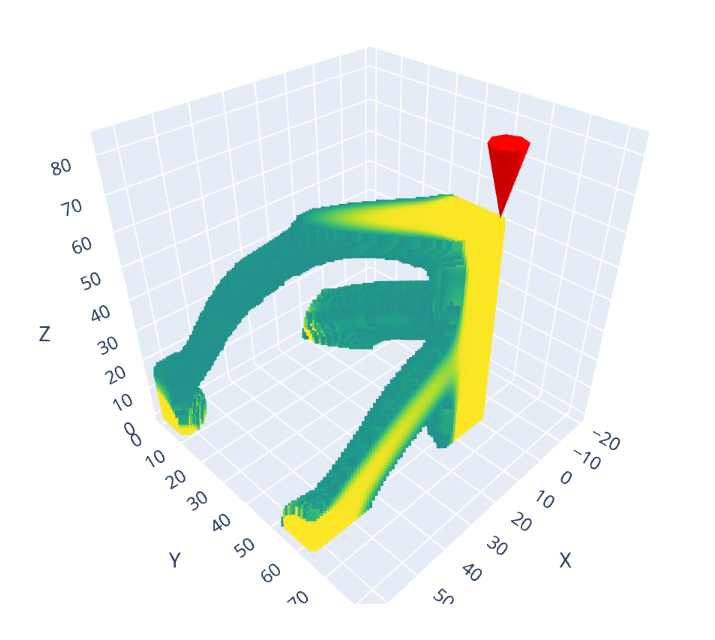

Beams3D#
{kind=link}

3D structural topology optimization problem.
Version |
0 |
Design space |
|
Objectives |
c: ↓ |
Conditions |
|
Dataset |
|
Import |
|
Lead |
Arthur Drake @arthurdrake1 |
Motivation#
As articulated in the Beams2D and Thermoelastic3D sections, topology optimization problems are useful benchmarks because they expose the interaction between geometry, physics, numerical simulation, and optimization. Beams3D extends the structural beam setting to a volumetric density field while keeping the physics structural-only. This makes the problem heavier and more geometrically expressive than Beams2D, but simpler and cheaper than Thermoelastic3D because it does not include heat conduction or thermoelastic coupling.
The goal is to optimize the placement of material in a three-dimensional domain subject to fixed supports, an applied structural load, and a target volume fraction. The resulting task is a compact 3D structural compliance benchmark for inverse-design and generative-model experiments.
Design space#
This structural topology optimization problem is governed by linear elasticity
on a 3D domain. Load and support nodes are placed on the boundary to define a
structural condition. The design is a density array of shape
(nely, nelx, nelz), with axis order [y, x, z] and values in [0, 1], where
1 represents solid material and 0 represents void. The names nelx, nely,
and nelz still refer to the physical x, y, and z element counts.
The default Beams3D v0 problem uses a 16 x 16 x 16 element grid. The
corresponding boundary-condition masks are defined on the node grid and
therefore have shape 17 x 17 x 17. Additional datasets are provided at
32 x 32 x 32 and 64 x 64 x 64 resolution for higher-resolution learning and
evaluation workflows.
Objectives#
The public objective is to minimize c, the structural compliance of the design
under the applied load. Lower structural compliance corresponds to a stiffer
design. The target volume fraction is handled as an optimization constraint
rather than a dataset objective, following the Beams2D convention.
The objectives are:
c: Structural compliance to minimize.
Conditions#
volfrac: Target volume fraction for the volume fraction constraintrmin: Filter size used in the optimization routineforcedist_x: Fractional x-position of the vertical load on the top face.forcedist_y: Fractional y-position of the vertical load on the top face.
The public conditions follow the compact dataset schema: volfrac, rmin,
forcedist_x, and forcedist_y. Explicit node masks are solver config values;
when force_elements_z is omitted, Beams3D reconstructs the vertical load mask
from forcedist_x and forcedist_y.
Following the Beams2D convention, custom grids should be created by passing
nelx, nely, and nelz to the Beams3D(config={...}) constructor. That
keeps the instance design space, default masks, and dataset id consistent.
Simulator#
The simulation code follows standard density-based structural topology optimization practice. It uses a Hex8 finite-element structural model, SIMP-like material interpolation, a density/sensitivity filter to reduce checkerboard-like artifacts, and the method of moving asymptotes (MMA) to update the design variables.
Beams3D is intentionally close to the Thermoelastic3D code structure, but it removes the thermal domain, heatsink boundary conditions, thermal compliance, thermal expansion coupling, and objective weighting parameter. This leaves a structural-only FEM workflow with fewer objective components and less assembly work per optimization iteration.
The Beams3D implementation also keeps the structural FEM setup separate from the optimization loop. Iteration-invariant structural bookkeeping is cached once per run, sparse structural systems are solved with an AMG-preconditioned conjugate gradient solver, and the cone sensitivity filter is applied in matrix-free form rather than materializing the full filter matrix. These changes preserve the Thermoelastic3D-style organization while making the structural-only 3D problem more efficient.
Boundary-condition masks are node masks indexed [x, y, z], with shape
(nelx + 1, nely + 1, nelz + 1). This mask axis order differs from the design
array’s [y, x, z] order. Beams3D exposes vertical z-direction loads only; each
active load node receives a fixed nondimensional nodal load of magnitude 0.5,
so compliance values scale with that constant.
Rendered designs use a simple Matplotlib 3D voxel plot. Pass open_window=True
to display it in a window.
Dataset#
Beams3D provides datasets at three cubic resolutions on the Hugging Face Datasets Hub:
16 x 16 x 16: IDEALLab/beams_3d_16_v032 x 32 x 32: IDEALLab/beams_3d_32_v064 x 64 x 64: IDEALLab/beams_3d_64_v0
The built-in v0 problem class defaults to the 16 x 16 x 16 dataset. The
higher-resolution datasets follow the same problem family and field structure,
but are intended for workflows that explicitly operate at those resolutions.
Relevant datapoint fields include:
optimal_design: An optimized density field for the specified resolution. Hugging Face rows may store this as a flat vector;random_design()reshapes it to(nely, nelx, nelz).volfrac: The target volume fraction.rmin: The filter radius used in the optimization routine.forcedist_x: The fractional x-position of the vertical load on the top face.forcedist_y: The fractional y-position of the vertical load on the top face.c: The structural compliance of the optimized design.optimization_history: Objective values recorded during optimization.
The simulator still uses explicit node masks for boundary conditions. Dataset
examples reconstruct force_elements_z from forcedist_x and forcedist_y,
and use the problem’s default fixed-support mask.
Citation#
This problem follows density-based structural topology optimization methods for 3D compliance minimization, using SIMP-style material interpolation, finite-element analysis, sensitivity filtering, and MMA updates. If you use this problem in your experiments, cite the references below:
@article{bendsoe1999material,
title={Material interpolation schemes in topology optimization},
author={Bends{\o}e, Martin P. and Sigmund, Ole},
journal={Archive of Applied Mechanics},
volume={69},
number={9--10},
pages={635--654},
year={1999},
publisher={Springer},
doi={10.1007/s004190050248}
}
@article{liu2014efficient,
title={An efficient 3D topology optimization code written in Matlab},
author={Liu, Kai and Tovar, Andr{\'e}s},
journal={Structural and Multidisciplinary Optimization},
volume={50},
number={6},
pages={1175--1196},
year={2014},
publisher={Springer},
doi={10.1007/s00158-014-1107-x}
}
@article{svanberg1987method,
title={The method of moving asymptotes -- a new method for structural optimization},
author={Svanberg, Krister},
journal={International Journal for Numerical Methods in Engineering},
volume={24},
number={2},
pages={359--373},
year={1987},
publisher={Wiley},
doi={10.1002/nme.1620240207}
}